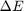
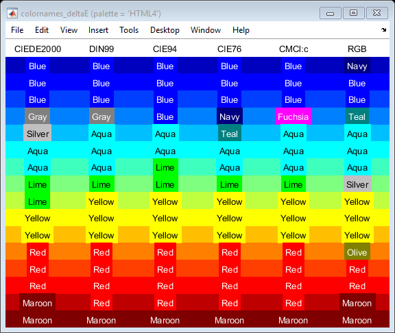
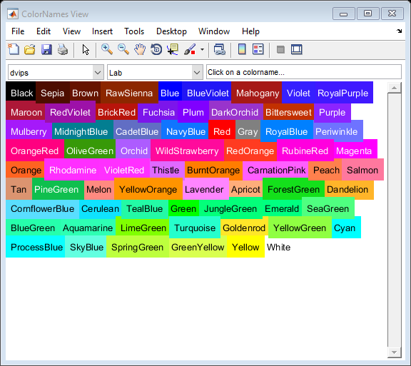
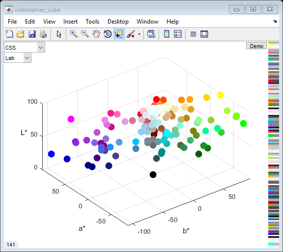

COLORNAMES Examples
The function COLORNAMES matches the input RGB values or color names to the closest colors from the selected palette. COLORNAMES returns the same outputs whether matching names or RGB:
[names,RGB] = colornames(palette,RGB) [names,RGB] = colornames(palette,names)
This document shows some examples of using COLORNAMES to match RGB values or color names. The bonus functions are also explained in this document, together with examples.
Contents
- Palette Descriptions
- Return Palette Names
- Return All Color Names and RGB Values for One Palette
- Match Color Names
- Match Index Number
- Match Initial Letter
- Match RGB
- Match RGB, Selecting the Color Difference Metric
- View the Color Difference Metrics in a Figure
- View the Palette Colors in 2D
- View the Palette Colors in 3D
- Unmatched Color Name Error
Palette Descriptions
Palettes of named colors have been defined by various people and groups, often intended for very different applications. COLORNAMES supports a wide selection of common color palettes: a detailed list of the supported palettes is printed in the command window by simply calling COLORNAMES with no input arguments and no output arguments:
colornames()
Alphabet 26 An alphabet of 26 clearly distinguishable colors, by Paul Green-Armytage.
Source: https://eleanormaclure.files.wordpress.com/2011/03/colour-coding.pdf
AmstradCPC 27 Amstrad Colour Personal Computer (CPC) with 27 named colors.
Source: http://www.cpcwiki.eu/index.php/CPC_Palette
AppleII 16 The main 16 colors provided by Apple II's Master Color Values.
Source: http://www.1000bit.it/support/manuali/apple/technotes/iigs/tn.iigs.063.html
Bang 678 Per Bang's RGB color names (678 colors), V2.
Source: http://www.procato.com/rgb+index/?csv
BS381C 97 British Standard 381C colors, used in identification, coding and other special purposes.
Source: http://www.e-paint.co.uk/BS381 Colourchart.asp
CGA 16 The main 16 colors provided by IBM's first graphics card, the Color Graphics Adapter.
Source: https://en.wikipedia.org/wiki/Color_Graphics_Adapter
Crayola 222 All simple colors listed on the Crayola website (excludes metallic, glitzer, gel fx).
Source: http://www.crayola.com/explore-colors/
CSS 141 W3C's Cascading Style Sheets language colors (also HTML, XUL).
Source: https://drafts.csswg.org/css-color/#named-colors
dvips 68 LaTeX Device Independent file to Post-Script conversion program.
Source: <texmf>\dvips\base\color.pro
Foster 870 John Foster's summary of Nathan Maroney's "Color Naming Experiment" data.
Source: http://people.csail.mit.edu/jaffer/Color/CNE-2007.txt
HTML4 16 HyperText Markup Language version 4.01 Basic color keywords.
Source: http://www.w3.org/TR/REC-html40/types.html#h-6.5
ISCC 267 All 267 colors of the ISCC-NBS System of Color Designation, adjusted for RGB.
Source: https://www.w3schools.com/colors/colors_nbs.asp
Kelly 22 Approximations of Kenneth L. Kelly's 22 colors of maximum contrast.
Source: http://www.iscc.org/pdf/PC54_1724_001.pdf
MacBeth 24 MacBeth ColorChecker chart of 24 colors (as sRGB).
Source: http://xritephoto.com/documents/literature/en/ColorData-1p_EN.pdf
MATLAB 8 MATLAB's eight standard named colors.
Source: http://www.mathworks.com/help/matlab/ref/colorspec.html
Natural 6 The Natural Color System's six base colors.
Source: https://en.wikipedia.org/wiki/Natural_Color_System
R 549 The colors used in R's colors() vector (these are the X11 colors).
Source: C:\Program Files\R\rw<version>\etc\rgb.txt
RAL 213 All 213 RAL CLASSIC colors. These values have been converted to RGB by RAL.
Source: http://www.ral-farben.de/content/application-help/all-ral-colours-names/overview-ral-classic-colours.html
Resene 3132 Resene's own RGB values for their "Total Colour System" paints (2010).
Source: www.resene.co.nz/swatches/download_pencils.xls
Resistor 13 Resistor colors specified by IEC 60062:2016.
Source: https://en.wikipedia.org/wiki/Electronic_color_code
SherwinWilliams 1534 Sherwin-Williams' own list of 1534 paint colors.
Source: https://images.sherwin-williams.com/content_images/sw-pdf-sherwin-williams-color.pdf
SVG 140 W3C's Scalable Vector Graphics (SVG 1.1) recognized color keyword names.
Source: http://www.w3.org/TR/SVG/types.html#ColorKeywords
Tableau 10 Tableau's classic 10 color palette, named here: https://matplotlib.org/gallery/color/named_colors.html.
Source: https://public.tableau.com/profile/chris.gerrard#!/vizhome/TableauColors/ColorPaletteswithRGBValues
Thesaurus 240 Ingrid Sundberg's collection of 240 color "synonyms", with a focus on literature.
Source: http://ingridsundberg.com/2014/02/04/the-color-thesaurus/
Trubetskoy 22 Sasha Trubetskoy's complete list of 20 simple and visually distinct colors, plus black and white.
Source: https://sashat.me/2017/01/11/list-of-20-simple-distinct-colors/
Wikipedia 1288 Not every color article is listed here. List accessed: 2016-04-08.
Source: https://en.wikipedia.org/wiki/Lists_of_colors
Wolfram 24 Wolfram's classic colors for Mathematica. Newer versions use W3C colors.
Source: http://reference.wolfram.com/language/guide/Colors.html
X11 549 X Window System names (version 1.2), usually found in <X11root>/lib/X11/rgb.txt. Is used for GNU Emacs, and is the basis of the W3C colorscheme (with some modifications).
Source: http://cvsweb.xfree86.org/cvsweb/*checkout*/xc/programs/rgb/rgb.txt?rev=1.2
xcolor 19 LaTeX package to support colors in documents.
Source: <texmf>\tex\latex\xcolor\xcolor.sty
xkcd 949 Color names chosen by internet survey participants. The survey is described and analyzed here: http://blog.xkcd.com/2010/05/03/color-survey-results/ . Some names may not be suitable for work!
Source: http://xkcd.com/color/rgb.txt
Return Palette Names
To return a cell array of the supported palettes simply call COLORNAMES with no input arguments and one output argument:
palettes = colornames()
palettes =
'Alphabet'
'AmstradCPC'
'AppleII'
'Bang'
'BS381C'
'CGA'
'Crayola'
'CSS'
'dvips'
'Foster'
'HTML4'
'ISCC'
'Kelly'
'MacBeth'
'MATLAB'
'Natural'
'R'
'RAL'
'Resene'
'Resistor'
'SherwinWilliams'
'SVG'
'Tableau'
'Thesaurus'
'Trubetskoy'
'Wikipedia'
'Wolfram'
'X11'
'xcolor'
'xkcd'
Return All Color Names and RGB Values for One Palette
Simply call COLORNAMES with the name of the required palette:
[clr,rgb] = colornames('MATLAB')
clr =
'Black'
'Blue'
'Cyan'
'Green'
'Magenta'
'Red'
'White'
'Yellow'
rgb =
0 0 0
0 0 1
0 1 1
0 1 0
1 0 1
1 0 0
1 1 1
1 1 0
Match Color Names
Each input name is matched to a color name from the requested palette: an input name that does not match any of the color names will throw an error. The matching is very flexible though, as COLORNAMES usually makes a match regardless of spaces between words and character case, although for some palettes space characters may be significant. Note that CamelCase always signifies separate words (words all in one case are considered one word).
The color names are input as char row vectors and may supplied either within one cell array or as separate input arguments:
[clr,rgb] = colornames('xkcd',{'red','green','blue'}) [clr,rgb] = colornames('xkcd','eggshell','eggShell')
clr =
'Red'
'Green'
'Blue'
rgb =
0.89804 0 0
0.082353 0.6902 0.10196
0.011765 0.26275 0.87451
clr =
'Eggshell'
'Egg Shell'
rgb =
1 1 0.83137
1 0.98824 0.76863
Match Index Number
Palettes with a leading index number may be matched by just the number, or just the name, or both together:
colornames('CGA','9','LightBlue','9LightBlue')
ans =
'9 Light Blue'
'9 Light Blue'
'9 Light Blue'
Match Initial Letter
Palettes Alphabet, MATLAB, and Natural also match the initial letter to the color name (except for 'Black' which is matched by 'k'):
colornames('MATLAB','c','m','y','k')
ans =
'Cyan'
'Magenta'
'Yellow'
'Black'
Match RGB
Each input RGB triple is matched to the closest RGB triple from the requested palette:
[clr,rgb] = colornames('HTML4', [0,0.2,1;1,0.2,0])
clr =
'Blue'
'Red'
rgb =
0 0 1
1 0 0
Match RGB, Selecting the Color Difference Metric
Input RGB values are matched using one of several standard, well defined color difference metrics known as  or deltaE. The default color difference is "CIE94", which provides good matching for most palettes and colors. Other deltaE calculations can be selected by using the third input argument:
rgb = [0,0.5,1]; colornames('HTML4',rgb,'CIEDE2000') colornames('HTML4',rgb,'CIE94') % default. colornames('HTML4',rgb,'CIE76') % i.e. CIELAB. colornames('HTML4',rgb,'DIN99') % better than CIELAB. colornames('HTML4',rgb,'CMCl:c') colornames('HTML4',rgb,'RGB')
ans =
'Gray'
ans =
'Blue'
ans =
'Navy'
ans =
'Gray'
ans =
'Fuchsia'
ans =
'Teal'
View the Color Difference Metrics in a Figure
The helper function COLORNAMES_DELTAE demonstrates how the different deltaE metrics match the input RGB to the palette colors. Simply select the palette, provide an Nx3 colormap and all deltaE metrics are listed, with the matched colors displayed in the columns below:
colornames_deltaE('HTML4',jet(16))
 View the Palette Colors in 2D
The helper function COLORNAMES_VIEW plots the palettes in a figure. Drop-down menus select the palette, and also how the colors are sorted. Click on any color to view its hex RGB value (may be approximate).
colornames_view('dvips','Lab')
View the Palette Colors in 3D
The helper function COLORNAMES_CUBE plots the palettes in a figure. The data cursor can be used to view the color names, by clicking on the nodes. Drop-down menus select the palette, and the color space of the colorcube:
colornames_cube('CSS','Lab')
Unmatched Color Name Error
If the input color name cannot be matched then COLORNAMES will throw an error, and displays color names that are similar to the input string/s:
colornames('CSS', 'bleu', 'blanc', 'rouge')
Error using colornames>cnNoMatch (line 311)
The palette 'CSS' does not contain these colors: 'bleu', 'blanc', 'rouge'.
Palette color names that are similar to the input names:
bleu -> 'Blue', 'Black', 'Peru', 'Plum', 'Red', 'Aqua', 'Beige', 'Bisque'.
blanc -> 'Black', 'Blue', 'Cyan', 'Tan', 'Beige', 'Brown', 'Gray', 'Khaki'.
rouge -> 'Azure', 'Beige', 'Blue', 'Orange', 'Aqua', 'Brown', 'Coral', 'Gold'.
Call COLORNAMES('CSS') to list all color names for that palette,
or COLORNAMES_VIEW('CSS') to view the palette in a 2D list,
or COLORNAMES_CUBE('CSS') to view the palette in a 3D cube.
Error in colornames (line 260)
cnNoMatch(fnc{idp},cnc,inp(idn==0))
Error in colornames_doc (line 84)
colornames('CSS', 'bleu', 'blanc', 'rouge')